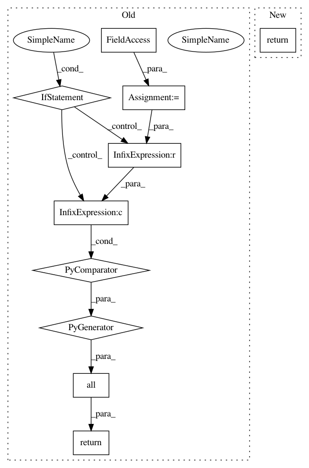

e2d8c0198e63660e421d4552e37ef723491230bd,pixyz/distributions/distributions.py,DistGraph,has_reparam,#DistGraph#,149
Before Change
@property
def has_reparam(self):
return all(self.node_distribution(var) is None or self.node_distribution(var).has_reparam for var in self.graph)
def __repr__(self):
text = "\n".join(repr(dist) for _, dist in self.topological_sorted_distribution())
return text
After Change
@property
def has_reparam(self):
return all(dist.has_reparam for _, dist in self.node_distributions())
def __repr__(self):
text = "\n".join(repr(dist) for _, dist in self.node_distributions(sorted=True))
return text
In pattern: SUPERPATTERN
Frequency: 3
Non-data size: 10
Instances
Project Name: masa-su/pixyz
Commit Name: e2d8c0198e63660e421d4552e37ef723491230bd
Time: 2020-06-29
Author: kaneko@weblab.t.u-tokyo.ac.jp
File Name: pixyz/distributions/distributions.py
Class Name: DistGraph
Method Name: has_reparam
Project Name: stanford-mast/nn_dataflow
Commit Name: e564e9df5e6fe95ca8c3b08910eae5fa4261a123
Time: 2017-09-08
Author: mgao12@stanford.edu
File Name: nn_dataflow/core/node_region.py
Class Name: NodeRegion
Method Name: contains_node
Project Name: stanford-mast/nn_dataflow
Commit Name: a29efe2ccf3b8fe3b46294e2d4d3047517cbdd04
Time: 2018-07-02
Author: mgao12@stanford.edu
File Name: nn_dataflow/core/node_region.py
Class Name: NodeRegion
Method Name: contains_node